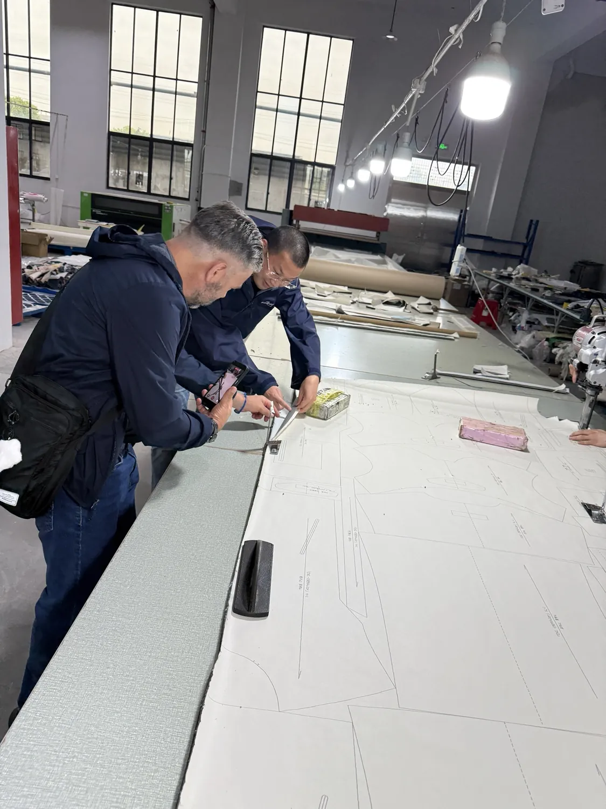
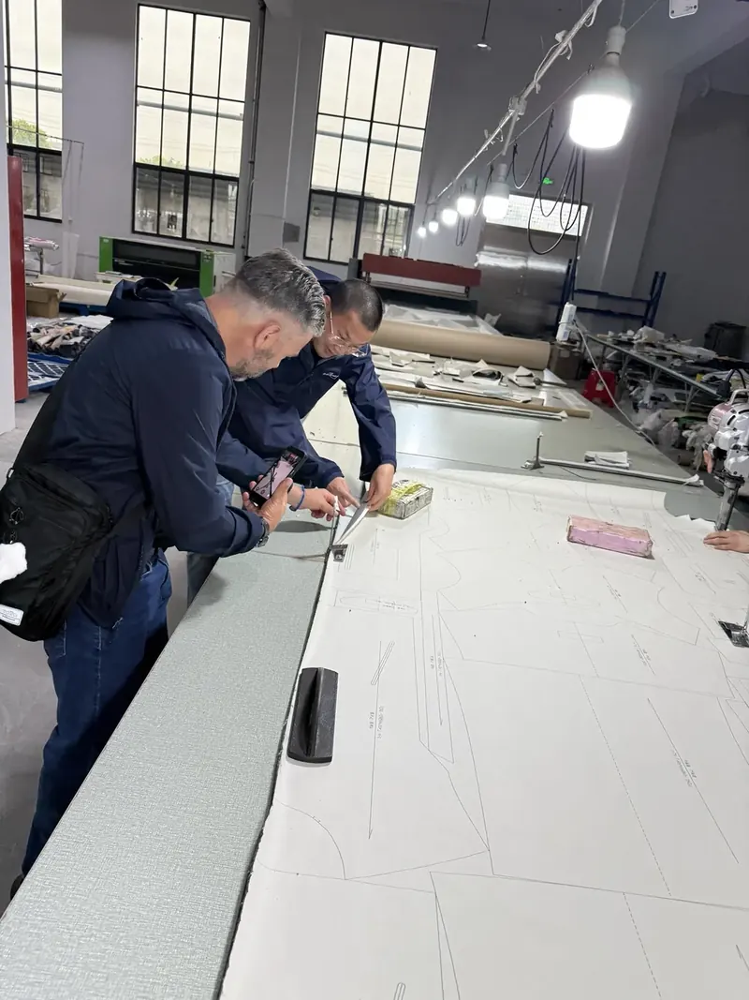
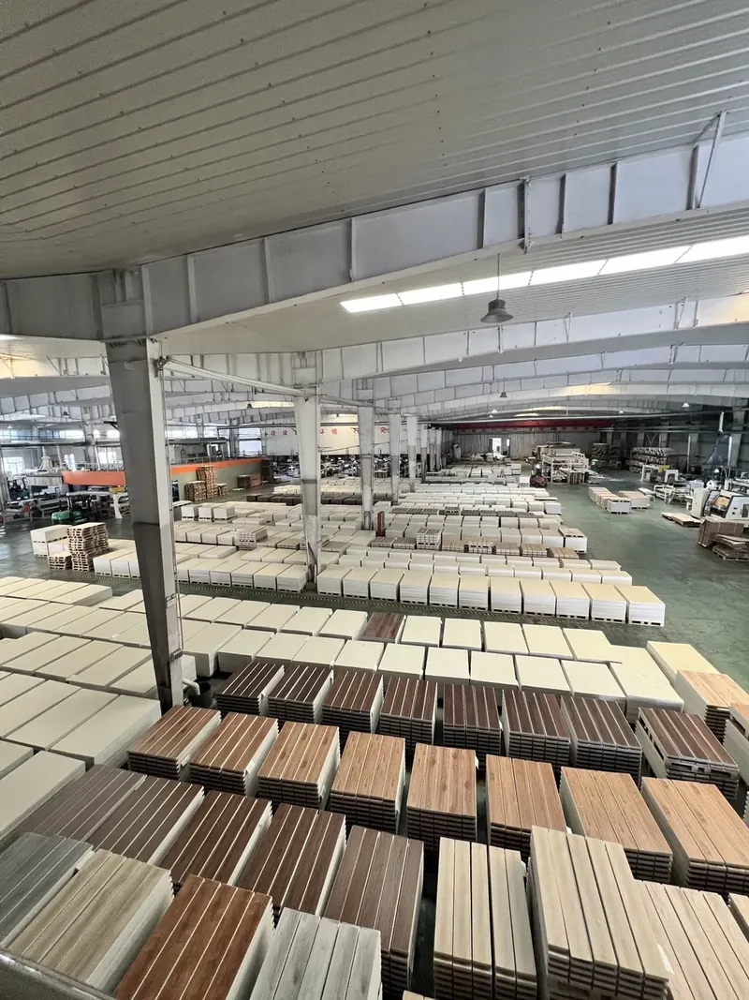
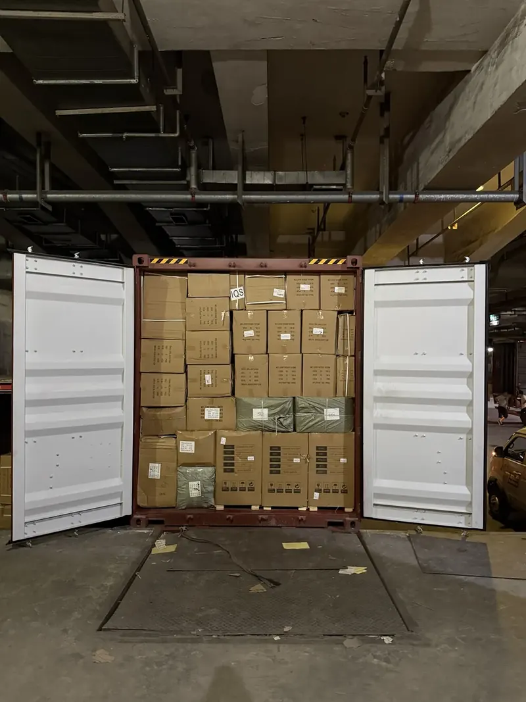

Conteo y medidas
Cantidad de unidades y cajas, dimensiones y peso real de la carga.

Conteo, revisión visual, medidas, empaque, etiquetas, pruebas básicas y supervisión de carga en fábrica o bodega, antes de que tu mercancía salga de China.
El alcance de cada inspección se acuerda por escrito antes de hacerla: revisamos lo que a tu producto le importa.
Cantidad de unidades y cajas, dimensiones y peso real de la carga.
Defectos, diferencias de color, terminaciones y acabados.
Que el embalaje resista el viaje y que las etiquetas y marcas sean las correctas.
Funcionamiento básico del producto cuando se puede probar en el lugar.
Registro con fotos de lo revisado y de lo que encontramos.
Presencia en el cierre del contenedor o del consolidado.



Si encontramos un problema, te avisamos con fotos antes de embarcar para que lo resuelvas con tu proveedor. Los defectos de fábrica se reclaman al proveedor, y te ayudamos con el reclamo.
Se cotiza según la cantidad de productos, dónde está la mercancía y el nivel de detalle que necesitas. Te confirmamos el valor antes de hacerla.
Te avisamos con fotos antes de que la carga se embarque, para que decidas con tu proveedor cómo resolverlo. Los defectos de fábrica se reclaman al proveedor y te ayudamos con ese reclamo.
Al recibirla en nuestra bodega de Yiwu la contamos, medimos, pesamos y fotografiamos. Eso no incluye abrir y revisar el producto en detalle: para eso está el control de calidad.
Sí. Revisamos en la fábrica o en la bodega que acordemos, durante la producción o con el pedido listo.
No. Revisamos lo acordado en el momento de la inspección; no es una certificación de laboratorio ni una garantía del desempeño futuro del producto.
Cotiza tu carga con la calculadora y agrega el control de calidad como servicio adicional.